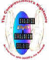
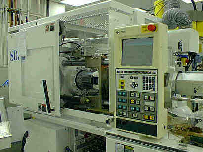
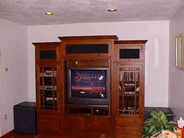

|
The Compressionist's Nightmare:

An Interview with WAMO's Jim Babinski
By Stu Kobak
Remember when you were a kid and watched the wrong monster movie. Nightmares wracked you out of bed in the middle of the night, a cold sweat making your flannel pajamas clammy. It's a long time since Jim Babinski, Compressionist for WAMO, had his sleep interrupted by images of Godzilla using Jim as the missile in a game of monsterball, but working in the pressure seat as a guy
responsible for getting the best MPEG2 images on a DVD can provide it own nightmare's. How about working day and night to get something out on time, putting sixty hours in Monday Through Thursday and finding your need a 30 hour Friday to finish the project. You get out the magic wand and turn Friday into the equivalent of thirty hours, only just when you're about to put the finishing touches on that DVD, you realize the video files are
2megabytes over the DVD disc limit. Right, start all over again! That's the Compressionist's Nightmare, the image that gives him cold sweats on those pressure filled adult nights. Who knows, maybe it even happened. One thing for sure, Jim Babinski doesn't wear flannel pajamas anymore.
Just when videophiles were beginning to learn about the mysteries of transferring film to video, along came DVD and a new mystery: MPEG compression. Just when they began to understand the terminology of the laser medium, when laser rot and crosstalk and D2 hits were not phrases from a bad science fiction movie, a whole lexicon of DVD descriptions became the next order of video sophistication. The good part is
that the electronics industry has delivered a medium of awesome potential to the consumer. DVD images can literally be inspiring, but it's up to a new team of experts, led by the compressionists, to make sure that DVD is as good as it gets.
"One thing to always strive for is transparency, not just in compression but in everything related to this business. If we can take the process out of the way, so it's not noticed, then we've succeeded. That's what I've been working toward," says Jim Babinski. That's as close to a mission statement that WAMO's Compressionist comes, but it's good enough.
You might not guess what Babinski considers the toughest project he's worked on. "The most challenging for compression by far was Madonna: Girlie Show Live Down Under. It's was just way too long to fit on a single side, at the time. Today I don't think I'd have much trouble. I've gotten better, the tools have gotten better. The fact that it is video, 30 frames per second, the live nature of the production,
a D2 composite source, and has all the action and detail of a Madonna concert, these things all add up. I think that disc has one of the best 5.1 music soundtracks available. I remember the time frame (118 min?) was the equivalent of a 144 minute movie....something like that. Video Essentials is tops in complexity that I've worked on, both compression and authoring. Just the nature of that material, and it's intended use made it a
challenge."
"Films in general compress very well," explained the Compressionist. "By films I mean Theatrical Releases. The style of photography used makes the difference. Keeping the main subject in focus and the other areas of the picture out of focus, allows more bits to be used on the important areas. Backgrounds that are out of focus require very few bits frame to frame, generally speaking.
"Other formats require more effort in general, first because of the
lack of telecine redundancy, second, because of the techniques used in shooting video. More of the picture is in focus, for computer animation, video sources, or anything not a Hollywood style film. This particular look tends to need higher bitrates, especially if there is a high noise floor; for example sporting events --- keeping the crowd in focus as the camera zips down court or field....MPEG assumes that there will be some
redundancy frame to frame....quick movements at a 60 field rate have little redundancy field to field."
Babinski is married and has 2 girls, a four-year-old and a seven-month-old. Kids rule when it comes to watching video at home. So what's new. Looking back at his route to DVD, the Compressionist remembered it this way: "I got into mixing sound for rock bands when I was 18. Back then that was the way to get started. The schools didn't have the credibility they have now for music engineers. Just because you
need to be willing and able to do everything, I picked up video editing/production on the way. I started at Specialty(Warner's sister tape facility)nine years ago making analog loop masters in cassettes. When we started Laserdisc and VHS production I had my foot in the door, so to speak. That was 1991. Laserdiscs were a valuable experience for me, I was responsible for training everyone else we hired. I moved over to DVD two years ago.
My first day Rob Seidel (MMC Director of Engineering) handed me a copy of the DVD Spec draft that was available and told me to memorize it (HA!) , then he booked us on a flight to LA the next week so we could find someone to build the DVD authoring/formatting tools we needed and it hasn't stopped since. "
 |
| DVD In-Line molding machine. |
What's it take to produce a good DVD? Naturally, that's got be a multi-level question. Taking the process out of the end result is something that Babinski comes back to time and again. " Eliminating MPEG-2 artifacts from the picture still takes a lot of work. The quality of the film transfer plays a huge part in how much needs to be done at the compression stage. Getting
correct inverse telecine, maintaining the look and feel of a film, and getting it all to fit on a disc these are the things that take time." Inverse Telecine is the process of deleting the redundant video fields created during the film transfer. 24 frame film becomes 30 frames video, MPEG compression allows the film to be encoded as 24 frame material, then the decoder rebuilds the 30 frames during playback. That's how you can have
multiple still frames in a row when you pause an MPEG stream. Babinksi is comfortable pointing out the natural limitations of DVD."MPEG-2 is called lossy: it’s impossible to make a perfect copy of the original, so technically it's not possible to make a mathematically perfect compression. Artifacts need to be hidden." The Compressionist took a moment to expand further on artifact terminology. "Blocking: Macro Blocks and
DCT Blocks are occasionally present, Macro Blocks are 16x16 pixels and DCT blocks are 8x8 pixels. These only happen when you run out of bits. There is always a limited peak bitrate available for video. Maximum for a disc is 10 Mbps, the video generally can run as high as 8.0 Mbps, on typical DVD titles. If the picture content is so demanding that 8.0 Mbps is not enough then there is no option but to coarsely quantize some areas. In this
process the original number of quantization levels from the master is reduced to fewer levels, thus reducing the number of bits needed to represent that block of picture data. The result is a lower MPEG-2 bitrate for that section of the movie. A very coarse quant gives you one value for 64 pixels, this is what everyone refers to as blocking. This basically makes more pixels the same value as other pixels, since they are grouped in those
block structures, there tends to be one value assigned to all the pixels in a block, making it easy to see." Some images are bigger bitrate eaters than others. The more details in sharp focus in the picture, the greater the appetite. A typical widescreen anamorphic presents less difficulty since the backgrounds are usually out of focus owing to the nature of the photographic lens. It's generally accepted DVD lore that action movies
are most demanding on the process. Every explosion that chomps on film production budgets makes a big impact on bitrate consumption. "The variables that eat bits are, Detail, Movement, Scene Changes, in that order. The soft backgrounds have little or no detail, they take very few bits. Most encoders actually apply more bits to the in-focus areas of the picture, which is the best possible use of the technology." I wondered if
judicious work at the compression bay do anything to improve on transfer elements delivered for compression " Most definitely, Babinski responded." However the compression equipment is not the tool for any tweaking. The best you can hope for during the compression is a stalemate - no visible loss. The Pre-processing is the key to low-bitrate compression The forward and backward predictions done by the compression system reduce
the number of bits to encode.....throwing out as much redundant data as possible before compression is the difference between OK and fantastic....Inverse telecine is important for this reason."
Something I have observed specifically on DVD is a fixed noise pattern, almost like a dirty window that you are watching the picture through. Fortunately, it's not a typical DVD occurrence. Babinski explained what he thought it was: "That's a side effect of some types of preprocessing. It is independent from MPEG-2 or DVD. It was more common a few months ago, very often a master tape has been processed and
this "look" has been introduced before compression. Masters transferred a few years ago (2-3) are the most likely places to see this. This is noticeable on DVD because the process doesn’t hide it, it’s a very high frequency noise pattern. Newer masters should be using the latest preprocessing which seems to have eliminated this effect, or maybe the studios have stopped using those filters, I'm not sure which. This is one
of the signs of an evolving technology. DVD has only been on the market for a year in the US, how to create a master tape that will shine in the new format is not yet determined, things change every week.
Sony has been especially good with their new transfers to DVD, but I think most if not all of their releases have been recent. Have they put out anything from the archives? Is it best to dust off a 25 year old master and release it on DVD? Or even a 5 year old master? Or is a complete re-mastering in order? It's been speculated that the last hold out studios are waiting for the technologies to mature so they can
deliver the best possible versions of their films. High Definition transfers down converted to DVD resolution is happening more often, the trend is for quality to go up from here."
I have often questioned the use of 19" professional monitors in the telecine bays. There are times when I see elements in a transfer I feel could have been eliminated and I surmise they simply were missed because of the size of the monitor. My theory: grain on a ten foot image can't have the same impact on a 19" monitor. Babinski countered reasonably " The big vs. little controversy depends on the
environment of the transfer bay. A large monitor that you can't get more than two feet from doesn't help. An operator, any operator, needs to be familiar with and comfortable with the equipment they are using. The only thing that can really be used to measure the process is quality of the end result. Big may be easier, but if you're good, it shouldn't matter." Babinski continued, "I've found that everything looks good on a
$8,000 monitor. No artifacts. The same is true for small monitors, perfect pictures. So I don't use them. I'd rather not say what we've been using lately. We are working out some problems with the manufacturer to make our monitors better, so I'd rather not plant any seeds that make people draw conclusions."
Quality Control is of paramount importance in any manufacturing process. There is a dedicated room to monitor the results of DVD compression. "We knew two years ago that would be the only practical
set up for disc QC. Then we have separate dedicated QC for six channel audio and video.
|

|
|
The WAMO Demo Room. |
The key to video compression QC is a matched pair of reference monitors that allow the operator to compare as many as four different paths for the video. Right now we have monitors we're happy with but we're looking to improve them. We may decide to dump them so I don't want to mention the manufacturer or model. We are still looking at a projection system, but the side-by-side comparison method seems to be
working for us and I don't know how that would fit with projectors. Just to put the whole thing in perspective, we used 13-inch Sony monitors for the entire run of Laserdisc here at the plant, they were a fine monitor that fit our work space, we didn't do any image processing at the time but we were able to certify the quality of the masters with pin point accuracy. " The WAMO philosophy is team QC. "There's nothing like a
different perspective, the final QC is done by someone who hasn't done the compression." Sometimes a Director or Cinematographer will want to sign off on a DVD compression job. "Some do, some don't. I think it depends on the age of the film, and if they did the same transfer for the LD release. As long as they are using approved masters, generally the approvals are up to the distributor. Menu approvals are the big development
in DVD. Menus need most approvals for DVD." On the other side of the coin, there are times when the master turned over for compression needs attention before the compression process begins. It's important to WAMO that their customers understand any problems with the material from the get-go and if it does need special attention, they will render their professional advice. Babinski explains further, "Preprocessing it is an
optional step. It usually doesn't require a specific tape dub or a new master. Most compression systems handle noise reduction as part of the compression system. We've configured our Minerva system so noise reduction is not even in the signal path if we decide not to use it. One thing we learned early on is that players and consumer televisions don't handle professional video without some processing. If it hasn't been done when the
master tape was made you really need to do something before compression. Specifically, a film transferred for laser disc has most likely been processed to reduce NTSC artifacts, so certain frequencies are rolled off. A film that has been restored is most likely already heavily processed for noise and film defects so there isn't anything that needs to be done before compression." The work load is enormous as the DVD release schedule
grows more ambitious. "Right now there are two of us that compress everything done here, we've just promoted someone to help with the workload, I don't see "compression" for DVD being a one person job. Not in quantity anyway, just the amount of time it takes to get a film to an MPEG stream requires more machine time than one person can handle. Plus the extra sets of eyes is a lifesaver. We take it one step more and do a
final Quality Control pass side-by-side with the master before we send anything to authoring. Usually the next day with fresh eyes."
It's not only compression that comes into the picture of making a successful DVD, but authoring, the way a DVD interfaces with the user, is most important on some discs. Video Essentials, everybody's must-have set-up disc, is a perfect example. The fact that this disc had significant work done on it at more than one DVD mastering facility is proof enough that its incarnation presented problems. "I finished
a good portion of the disc here," explained the WAMO Author/Compressionist. " Most of the authoring was done at AllPost in LA. None of that needed to be changed. I redid most of the compression for some player issues, we're still debating those issues so I can't discuss them. I think that was the first project that proved the importance of compatible compression and authoring systems. That's important for content producers
like Joe Kane, to be able to transfer what you've done and paid for, and to insure the integrity of your files in the future. Especially if a distributor is using many authoring companies, interchangeable assets is very important, and not to be taken for granted in DVD right now." One of the challenges of Video Essentials is that it needed to work on every DVD player in release and not all of them operated with a consistent
interface. Second and third generation players have eliminated some of the inconsistencies that meant a degree of compromise to Video Essentials. "Really, any disc needs to work on every player," explained Babinski. " Especially a disc like Video Essentials. Right now there's no reason for any disc vs. player compatibility issues. Most compression and authoring companies know how to make DVD." Video Essentials went
from a project to a tool at WAMO. "Any signal path that starts with a DVD and ends with a video monitor we set up with the Video Essentials disc. It's the best way to test the whole signal chain. Color temp is calibrated every other week," added Babinski.
DVD offers some definite advantages in producing high end images as well as inherent obstacles to overcome observed Babinski: "DVD's won't add the same types of noise other formats like laser discs will. Dark areas compress well if they are clean. Compression won't add noise in these areas, if there is excessive film grain or video noise in bright areas, compression will change the pattern of that noise.
This noise pattern tends to increase in areas of no motion, because the bitrate drops to the minimum set for the disc, generally. Typically those outside shot that establish a new scene location are very still. In MPEG terms, they require the least amount of bits, and run at very low bitrates. As far as the noise areas on a Laser Disc, it's part a perception thing and part player processing, part source material. Every step in any
analog process adds it's noise to a signal, I'd bet the noise level is fairly constant on most laser discs within a player, as the signal level changes the noise stays fairly constant, in dark areas the noise is apparent to our eyes in bright areas it's not as noticed. It's much more complex than simple signal to noise ratios but that's the underlying concept. DVD won't add noise until it goes through the digital to analog converter in
a player. The only step in the process that actually effects the signal quality is compression, noise isn't compounded at every stage. If a home theater has additional signal processing, like line doublers, then these issues are much more important because that equipment doesn't spend processing power enhancing or filtering grain. We learned that the hard way in Laser Discs, we tried to deliver a product that was true to the source.
Unfortunately most systems weren't prepared to deal with it."
Universal's Darkman is one of the feature films Jim Babinski has compressed. Looking at some aspects of it may help to illuminate the process and identify problem areas as well as "false" artifacts. The climatic helicopter sequence when Darkman is pursued appeared to be a difficult to me to present significant obstacles for DVD: " A few scenes through the copter chase are very grainy on the
master. Much like the opening shot of the docks. We worked very hard to ensure that no MPEG related artifacts are present in that scene. The grain is difficult to remove when the colorist is matching up each shot, anything that needs to be boosted has extra grain, actually moving through the buildings with the sky in and out of the frame is very difficult to compensate for. A little grain in the background of a 45 frame shot is down on
the list of things the colorist is working on. There are some green screen shots in the copter chase that are particularly grainy. We didn't try to modify the look of the master, the look of the grainy daylight scenes adds something to the shadow scenes I think. So really would any changes actually be an improvement? As far as compression, getting the noise/grain right is important. Dropping every fifth field with inverse telecine and
keeping up with the scene changes can cause the grain to mutate into a rainy look, you can start to get vertical streaks in the noise floor if you're not careful." One would guess that the many dark, smoky scenes would present a compression challenge." Compared to the explosions and the dark scenes this wasn't so difficult. Black is very important, Getting clean shadows with depth, even if it's not obvious, adds so much to the
picture. Some of the darker films I've done I'm very happy with."
Another Darkman sequence that I was certain displayed DVD artifacts is the transition on Francis McDormand's face from the night time explosion to the cemetery. As the scene morphs to the cemetery, her face is a mass of grain. I have seen this on other discs from time to time, but seldom. Babinski commented: " The transition from the explosion to the cemetery, I could be way off, but, in order to effectively pull off the transition
for dramatic effect, the layer of her after the explosion had the cemetery and the funeral outfit built around her. Using the actress from the night scene in the day scene, the relative level of the picture needed to be raised to match. This brings out the grain, but only in the area shot in low light conditions, (her face). As far as what we do, when in doubt 'make it look like the source'. There sometimes are scenes that stand out
from the rest of the film, by the time it gets to us everyone who needs to has signed off on the picture quality. We're mostly concerned with problems that can occur on the masters sent to us.
The establishing sequence of the docks at the beginning of Darkman is another look that I have associated with MPEG's limitations. Babinski attributes the difficulty more to the original elements that to video in general of DVD in particular. "Many times the grain in certain scenes can be attributed to the light available at the time of filming. The film isn't exposed at a picture level consistent with the
scenes before or after. Those scenes are "boosted" before the final edit (this is how it looked in the theater). Boosting the signal level of the picture brings up the noise, in this case film grain. This is done to match the average picture level from scene to scene. The opening dock scene has a very limited dynamic range, i.e. black and peak white are very close in level. The entire scene is boosted to look smooth as it
transitions into the interior with a very high dynamic range."
Since the very beginning of DVD I have consistently heard that animation was a difficult compression for MPEG-2. On the surface, animation seems blithely simple, and personally, I always figured this to be true. When Space Jam was one of the first DVDs released, I smiled knowingly; only my knowing smile now turns sheepish: "Animation has all the things compression can't handle well. First, those black lines
that outline everything breakdown the encoders ability to work on a block level," explains Babinski. "Second the chroma subsampling really can drain the life out of rich animation. A high bitrate is in order for high quality animation, RSDL discs will handle most animation demands. Only in recent productions has there been a movement towards the "scope look" with backgrounds out-of-focus. This will make compression
easier, and may allow longer runs on single layer discs. Space Jam is a perfect example of how you address animation, bitrate, bitrate, bitrate. Exactly what bitrate and when is the tricky part. Funny you've brought up animation, just this morning we finished an Anime project and it looks fantastic. I experimented with a few things and got some unsolicited 'Wows!'. I can't wait to see it on disc. I'm sure you've noticed the halo around
some text in the credits on some discs, well it's very easy to achieve that halo look around every black outline in animation. Nasty stuff."Babinski and the WAMO team are the U.S. DVD Logical Verification Lab. Amongst the first to offer RSDL or dual layering capabilities on DVD, just about every major release with new features gets checked out at WAMO. "Currently, PC's are the big project around here. Expect smooth reliable
DVD-Video on every new PC in a few weeks," beamed Babinski.
Some projects touch us for different reasons. Every DVD Jim Babinski compresses is important to him, but he seems to embrace a sense of film history. " I've done some classic stuff for Image and Goodtimes. This Island Earth was fun to do for Image, and so was the Marx Brothers' Animal Crackers. I think those titles need to be handled with extra care at compression, mostly because if they aren’t perfect
they could get stuck in MPEG hell forever. There have been some titles released that really deserved better, which is a shame. Goodtimes has been preparing for DVD for almost two years, they’ve really done their homework. Now it’s paying off for them, they’ve been getting really positive reviews. They’ve been smart about DVD from the beginning. It doesn't make much sense to me to do something now that won't stand up in three or
four years. When the DVD market grows, quality will stand for more than it ever has. If a disc is expected to hold-up into HDTV it must be done correctly now. If it can't compete for tight shelf space in stores, it won't continue to make money."
There are many fine examples of quality DVD compression in the marketplace and Babinski is open and refreshing in his praise: " Anamorphic transfers are really forward thinking. Discs you buy today can be enjoyed on a 4x3 monitor, and when consumers move up to 16x9 monitors the disc is full screen. Building a disc catalog of anamorphic titles is the best thing a Home Video company can do, for themselves and
consumers. I really have to give Columbia Tristar credit. They've set standards for their releases and seem to go the distance. I think DVCC did Waterworld. They have some serious quality stuff coming out of there. Really fantastic."
Not surprisingly, Compressionist Jim Babinski has a sanguine outlook for the future of DVD. "DVD will get better, without question. In terms of quality, I think there is room for improvement, how much room is up for debate. Where those improvements will take place, better transfers, better image processing, better compression, better players, or better displays....we'll wait and see. Small gains are the
order of things now, every week or two we make a small tweak. I think that most of the improvements will be in displays, possibly players." Babinski notes that even HDTV can fit on current DVDs. "HDTV has a broadcast bandwidth of 19Mbps. A 19 Mbps channel rate puts 59 minutes on a DVD-9.(The trade designation for dual layer.) That's about the same as a single layer DVD at full bitrate, so the capacity is there. The question is
if there will be advancements in other areas, lasers, disc drives etc. that make the difference in HDTV discs." Babinski sees the coming HDTV standards as a positive for DVD. " In my opinion, HDTV will be the best thing that could happen to DVD. In terms of a consumer reference, I believe VHS will become unwatchable on HDTV sets, once people can do comparisons there's no enjoyment in VHS. In terms of image quality, HDTV
transfers will become the norm, back catalog titles will get restored and transferred in HD. The tools used for DVD are the forerunners of HDTV production, when the problems are solved for the higher resolution, compression for DVD will improve. The resolution on today's discs is the same as the ATSC recommendations for Standard definition digital, so they are completely compatible with future display devices. A byproduct of HDTV will
be the installed base of full blown AC-3 decoders, again today's discs will fit that environment. Depending on the time frame of when equipment is available and when broadcasters do full (i.e. 24hr) HDTV programming, DVD just may be the most available option for people to enjoy the benefits of the early systems. Again, this is just my opinion."
A word of caution is in order since all DVD enthusiasts are looking forward to robust growth for the format and a swarm of new titles. Like any new format, growing pains may develop because of growth. The care taken with each new DVD issued could crumble under the pressure of more and more product, but Babinski doesn't think that will happen " It could get sloppy, of course, but only if sloppy sells. Right
now I think quality and sales are directly related. Right now the average DVD consumer is a well informed, vocal, videophile. They don't spend money on slop, and they'll let you know about it. DVD is the first out of the blocks with MPEG at this resolution. Everything that follows for DTV should be as good or better in terms of the compression technology, so if any studios or film transfer facilities haven't been planning for what they
need to do, to accommodate compression, then I would think they are, waaaaay, behind the curve at this point. " |
|
|
|

Selections from the feature archive include articles on Akira Kurosawa, Frank Darabont, Blonde Bimbos, Hollywood Street
Gangs, or Vietnam: The Hollywood Pariah, and many more....
The Exquisite Muse of Zhang Yimou

The powerful image-making of Zhang Yimou has revealed itself in virtually every film he has made. Coupled with his remarkable collaboration with actress Gong Li, Zhang's has built a stunning body of work Click the image to read all about it.

The Movie Poster Archive includes extensive poster images from the films of stars like Susan Hayward, Kirk Douglas, Katharine Hepburn and many more. Our featured star is Kirk Douglas.
 
DVDPlanet is the DVD incarnation of legendary laser retailer Ken Crane's. Deep discounts and serious service.
 Direct from the corridors of the Home Theater Forum, Home Theater Talk is the newest place on the Net to discuss everything home theater. Friendly atmosphere and knowledgeable folks are the secret ingredients. Direct from the corridors of the Home Theater Forum, Home Theater Talk is the newest place on the Net to discuss everything home theater. Friendly atmosphere and knowledgeable folks are the secret ingredients.
 DVD Informix is a British site providing a variety of DVD information, including lots of DVD software. Check it out from articles to links. DVD Informix is a British site providing a variety of DVD information, including lots of DVD software. Check it out from articles to links.
 Black DVD Online is a new site dedicated to black film content on DVD. The commendable enterprise is hosted by Webmaster Samuel L.
McLemore, Jr. and presented in an attractive interface Black DVD Online is a new site dedicated to black film content on DVD. The commendable enterprise is hosted by Webmaster Samuel L.
McLemore, Jr. and presented in an attractive interface

Fine reviews, features and news on DVD. The Big Picture has been doing DVD as long as anyone. Jeff McNeal and Bob Banka feed on a steady diet of DVDs.

The official site for information about the great comic director. A treat for connoisseurs of classic Hollywood madcap.

The home of director Kevin Smith, replete with inside info on his films like Clerks, Mall Rats, Chasing Amy and Dogma.

First Run Features boasts a library of independent and foreign features available on DVD and VHS. Check out their web site for catalog details.

Ask Digital Man is the web's only 24-hour, totally FREE source for all your home theater, DVD, Dreamcast, PC, and Networking tech support needs!

Venerable electronics industry magazine with excellent online selections from their hard book.

Now a major independent DVD distributor, Image has parlayed its laser disc business to success. Great DVD release calendar info.

DVD links, information about Web specials, news, Site reviews.

DVD Reviews and more. The credo behind DVD Angle is "we cater to no one, and we call it as we see it."

DVD King does the retail thing these days selling DVDs.

Looking for information about widescreen movies and hardware. The Widescreen Movie Center is the place to go.

The National Film Preservation Foundation (NFPF) is the nonprofit organization created by the U.S. Congress to save America's film heritage.

An elegantly presented fan site dedicated to one of Hollywood's great action stars.
culturevulture.net
More than just candid film reviews, culturevulture looks at art, theater, dance and more. Worth a visit and a bookmark

ReelUniverse.com is the home of the true Indies. You will find links to many independent filmmakers selling VHS copies of their films that have not yet gotten commercial release. None of the filmmakers represented on the site have DVD product available, but here's hoping.
 
The Big Combo has style to spare in reviewing films and producing feature articles. Check out their special "Lingo" section.

Reviews of affordable remote controls in the market place. Codes and tips as well.
|